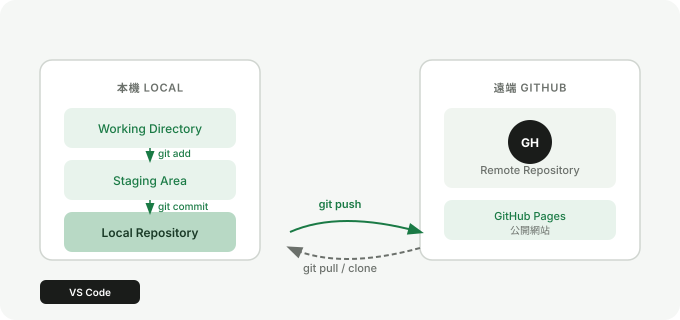

Chapter 1
Git 與 GitHub 是什麼
先搞懂這兩個工具各自負責什麼，你後面在 clone、commit、push 時才不會只是照步驟操作。
Git 是什麼
Git 是版本控制工具，負責記錄專案的變更歷史。你可以把它想成專案的時間軸，知道什麼時候改了什麼，也能在出錯時回到前一個狀態。
你需要先記住的最小觀念：
Git 主要在你的本機工作，它幫你追蹤檔案變化、建立版本紀錄、切分支、合併變更。
GitHub 是什麼
GitHub 是用來存放 Git repository 的遠端平台。它讓你可以把本機專案同步到雲端，也讓協作、分享、Pull Request 與網站部署變得更容易。
簡單說，Git 是工具，GitHub 是平台。兩者常一起出現，但角色不同。
兩者怎麼搭配工作

1
先在本機修改檔案
你用 VS Code 編輯 HTML、CSS、JavaScript 檔案。
2
用 Git 建立版本紀錄
透過 `add` 與 `commit` 把目前狀態記錄下來。
3
推送到 GitHub
使用 `push` 把本機的 commit 同步到遠端 repository。
重點整理
- Git 負責版本控制與紀錄變更
- GitHub 負責遠端同步、分享與協作
- 學會兩者分工後，後面的操作會清楚很多